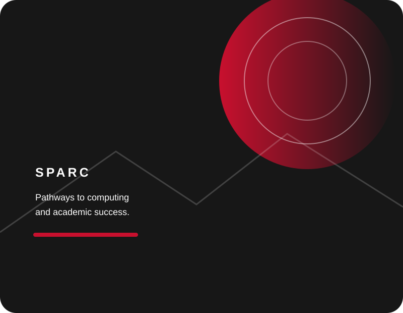

01 / Scholarship
Scholarship support
Eligible students are automatically considered through the university admissions process and FAFSA.
Eligibility and benefits →
The SPARC Scholarship supports academically talented domestic students from low-income families pursuing eligible STEM degrees, with academic guidance, career coaching, peer mentorship, and financial support.

SPARC brings together financial assistance and coordinated support to help scholars thrive at Illinois Tech.
Eligible students are automatically considered through the university admissions process and FAFSA.
Eligibility and benefits →Faculty, peer, and alumni/industry mentoring support academic development and career readiness.
Explore mentoring →Planned activities include career sessions, panels, team-building, visits, and competitions.
Explore activities →SPARC's undergraduate fields include artificial intelligence, applied mathematics, cybersecurity, computer science, data science, and statistics.
The four Principal Investigators and project management contact are organized on the Team page.